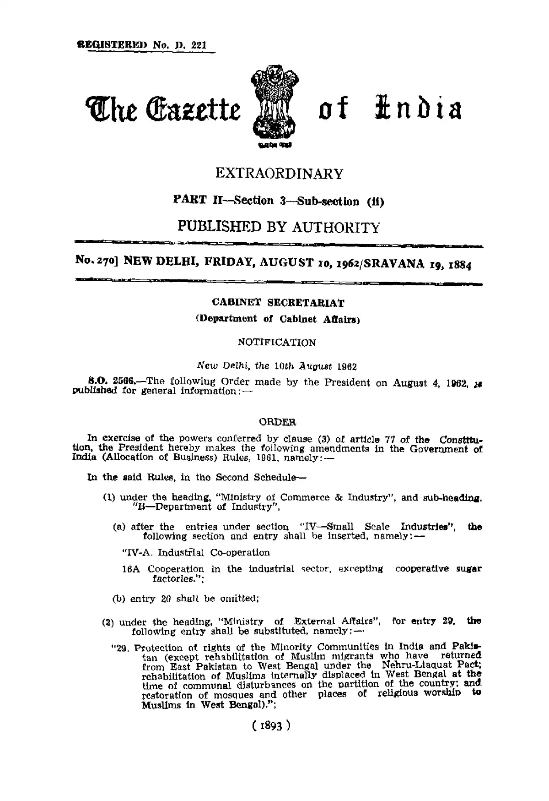
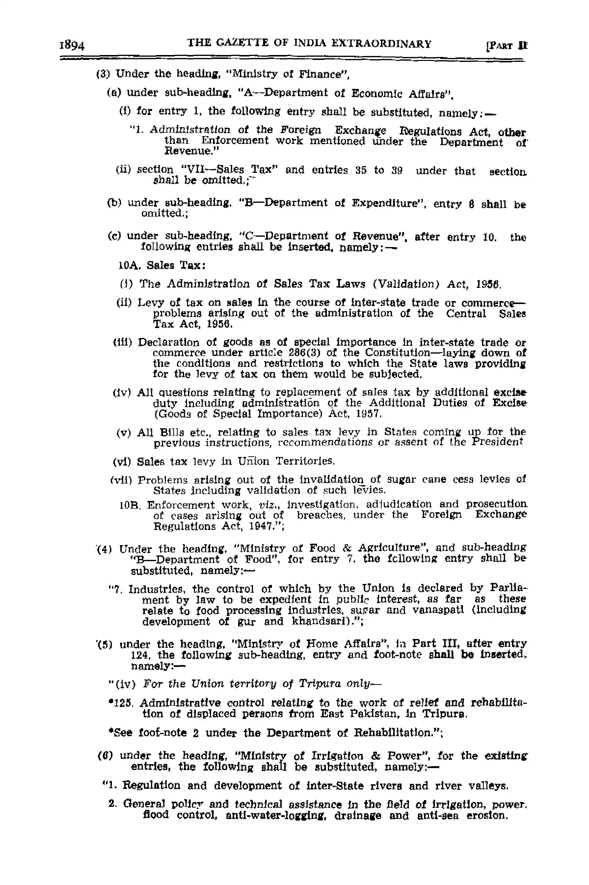
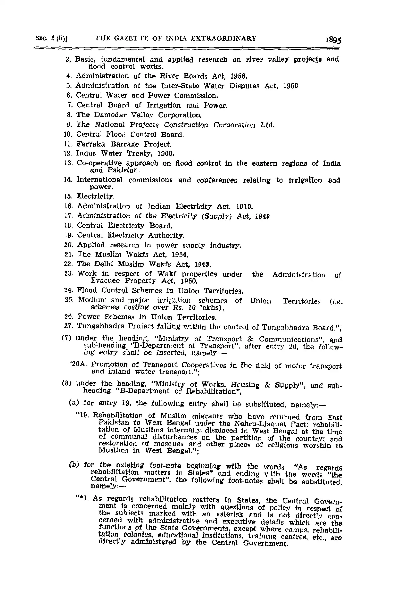
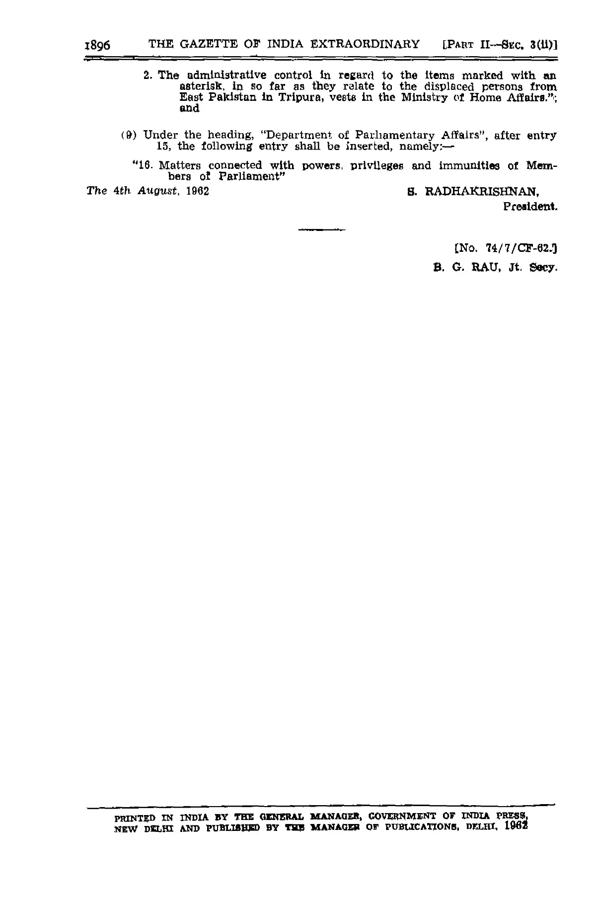

Amendment #9 (S.O. 2566, 1962)
14 changes: 0 to the First Schedule, 14 to the Second Schedule. 14 applied
What it did to the ministries
- shrankMinistry of Irrigation & Power shrinks from 38 to 27 subjects change 10 · histories: Irrigation & Power
The order, page by page
Page 1 of 4

123after Schedule 2 › Ministry of Commerce & Industry › Department of Industry › IV-Small Scale Industries
- IV-A. Industrial Co-operation 16A Cooperation in the industrial sector, excepting cooperative sugar factories.
applied at schedule 2 › ministry MINISTRY OF COMMERCE & INDUSTRY › department B › group_heading IV in the Rules after #9
Schedule 2 › Ministry of Commerce & Industry › Department of Industry › entry 20
applied at schedule 2 › ministry MINISTRY OF COMMERCE & INDUSTRY › department B › group_heading V › entry 20 in the Rules after #9
Schedule 2 › Ministry of External Affairs › entry 29
- 29. Protection of rights of the Minority Communities in India and Pakistan (except rehabilitation of Muslim migrants who have returned from East Pakistan to West Bengal under the Nehru-Liaquat Pact rehabilitation of Muslims Internally displaced in West Bengal at the time of communal disturbances on…
applied at schedule 2 › ministry MINISTRY OF EXTERNAL AFFAIRS › entry 29 in the Rules after #9
Page 2 of 4

45678910Schedule 2 › Ministry of Finance › Department of Economic Affairs › entry 1
- 1. Administration of the Foreign Exchange Regulations Act, other than Enforcement work mentioned under the Department of Revenue.
applied at schedule 2 › ministry MINISTRY OF FINANCE › department A › group_heading I › entry 1 in the Rules after #9
Schedule 2 › Ministry of Finance › Department of Economic Affairs › VII-Sales Tax; Schedule 2 › Ministry of Finance › Department of Economic Affairs › VII-Sales Tax › entry
applied at schedule 2 › ministry MINISTRY OF FINANCE › department A › group_heading VII in the Rules after #9
Schedule 2 › Ministry of Finance › Department of Expenditure › entry 8
applied at schedule 2 › ministry MINISTRY OF FINANCE › department B › entry 8 in the Rules after #9
after Schedule 2 › Ministry of Finance › Department of Revenue › entry 10
- 10A. Sales Tax: (1) The Administration of Sales Tax Laws (Validation) Act, 1958.
- il. Levy of tax on sales in the course of inter-state trade or commerceproblems arising out of the administration of the Central Sales Tax Act, 1956.
- iii. Declaration of goods as of special importance in inter-state trade or commerce under article 286(3) of the Constitution-laying down of the conditions and restrictions to which the State laws providing for the levy of tax on them would be subjected.
- iv. All questions relating to replacement of sales tax by additional excise duty including administration of the Additional Duties of Excise (Goods of Special Importance) Act, 1957.
- v. All Bills etc., relating to sales tax levy in States coming up for the previous instructions, recommendations or assent of the President
- vi. Sales tax levy in Union Territories.
and 2 more
- vii. Problems arising out of the invalidation of sugar cane cess levies of States including validation of such levies.
- 10B. Enforcement work, viz., investigation, adjudication and prosecution of cases arising out of breaches, under the Foreign Exchange Regulations Act, 1947.
applied at schedule 2 › ministry MINISTRY OF FINANCE › department C › entry 10A in the Rules after #9
Schedule 2 › Ministry of Food & Agriculture › Department of Food › entry 7
- 7. Industries, the control of which by the Union is declared by Parliament by law to be expedient in public interest, as far as these relate to food processing industries, sugar and vanaspati (including development of gur and khandsari).
applied at schedule 2 › ministry MINISTRY OF FOOD AND AGRICULTURE › department B › group_heading I › entry 7 in the Rules after #9
after Schedule 2 › Ministry of Home Affairs › Part III › entry 124
- iv. For the Union territory of Tripura only-
- 125. Administrative control relating to the work of relief and rehabilitation of displaced persons from East Pakistan, in Tripura. *See foof-note 2 under the Department of Rehabilitation.
applied at schedule 2 › ministry MINISTRY OF HOME AFFAIRS › part III › entry 125 in the Rules after #9
Schedule 2 › Ministry of Irrigation & Power
- 1. Regulation and development of inter-State rivers and river valleys.
- 2. General policy and technical assistance in the field of irrigation, power. flood control, anti-water-logging, drainage and anti-sea erosion. SEC. 8 (li)]
- 3. Basic, fundamental and applied research on river valley projects and Hood control works
- 4. Administration of the River Boards Act, 1956.
- 5. Administration of the Inter-State Water Disputes Act, 1956
- 6. Central Water and Power Commission.
and 21 more
- 7. Central Board of Irrigation and Power.
- 8. The Damodar Valley Corporation.
- 9. The National Projects Construction Corporation Ltd.
- 10. Central Flood Control Board.
- 11. Farraka Barrage Project.
- 12. Indus Water Treaty, 1960.
- 13. Co-operative approach on flood control in the eastern regions of India and Pakistan.
- 14. International commissions and conferences relating to irrigation and power.
- 15. Electricity.
- 16. Administration of Indian Electricity Act. 1910.
- 17. Administration of the Electricity (Supply) Act, 1948
- 18. Central Electricity Board.
- 19. Central Electricity Authority
- 20. Applied research in power supply industry.
- 21. The Muslim Wakfs Act, 1954.
- 22. The Delhi Muslim Wakfs Act, 1943.
- 23. Work in respect of Wakf properties under the Administration of Evacuee Property Act, 1950.
- 24. Flood Control Schemes in Union Territories.
- 25. Medium and major irrigation schemes of Union Territories (i.e. schemes costing over Rs. 10 lakhs).
- 26. Power Schemes in Union Territories.
- 27. Tungabhadra Project falling within the control of Tungabhadra Board.
applied at schedule 2 › ministry MINISTRY OF IRRIGATION AND POWER. in the Rules after #9
read page break
Page 3 of 4

111213after Schedule 2 › Ministry of Transport & Communications › Department of Transport › entry 20
- 20A. Promotion of Transport Cooperatives in the field of motor transport and inland water transport.
applied at schedule 2 › ministry MINISTRY OF TRANSPORT & COMMUNICATIONS › department B › group_heading III › entry 20A in the Rules after #9
Schedule 2 › Ministry of Works, Housing & Supply › Department of Rehabilitation › entry 19
- 19. Rehabilitation of Muslim migrants who have returned from East Pakistan to West Bengal under the Nehru-Liaquat Pact; rehabilltation of Muslims internally displaced in West Bengal at the time of communal disturbances on the partition of the country; and restoration of mosques and other places of…
applied at schedule 2 › ministry MINISTRY OF WORKS, HOUSING & SUPPLY › department Department of Rehabilitation › entry 19 in the Rules after #9
Schedule 2 › Ministry of Works, Housing & Supply › Department of Rehabilitation
- 1. As regards rehabilitation matters in States, the Central Government is concerned mainly with questions of policy in respect of the subjects marked with an asterisk and is not directly concerned with administrative and executive details which are the functions of the State Governments, except where…
- 2. The administrative control in regard to the items marked with an asterisk, in so far as they relate to the displaced persons from East Pakistan in Tripura, vests in the Ministry of Home Affairs.
applied at schedule 2 › ministry MINISTRY OF WORKS, HOUSING & SUPPLY › department Department of Rehabilitation in the Rules after #9
read page break
Page 4 of 4

14after Schedule 2 › Department of Parliamentary Affairs › entry 15
- 16. Matters connected with powers, privileges and immunities of Members of Parliament
applied at schedule 2 › ministry DEPARTMENT OF PARLIAMENTARY AFFAIRS › entry 16 in the Rules after #9
How this document was read
From the Government of India (Allocation of Business) Rules, 1961 and their amendments, as published by the Cabinet Secretariat (cabsec.gov.in), read by orgpedia. The readings of the older scanned gazettes have known gaps.